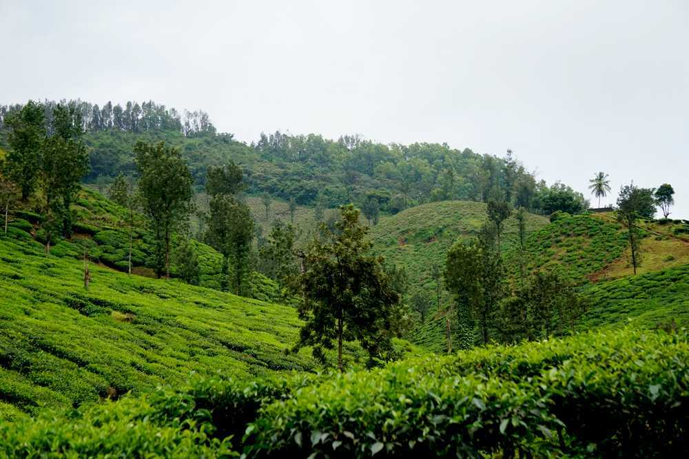

Famously known as the ‘Coffee Land of Karnataka’, Chikmagalur is situated in the foothills of the Mullayangiri Range in Karnataka and stands at an altitude of 3400 feet. If you love the aroma of freshly brewed coffee in the mornings, you are going to love Chikmagalur, which has a perpetual fragrance of coffee lingering in the air. Famous for its tall mountains, lush green forests and its tranquil environment (apart from its coffee production), Chikmagalur is a very popular tourist destination and is a quaint getaway from the busy life of the city.
The name Chikmaglur comes from the Kannada word Cikkamagala, which means - younger daughter’s town. According to legend, Chikmaglur was given as dowry to the youngest daughter of Rukmangada, the chief of Sakharayapattana, a town in the region.
Being the largest producer of coffee in the country, Chikmagalur is mainly all about its coffee. So if you’re a coffee enthusiast as well as a nature lover, taking a walk through one (or a few) of the numerous coffee plantations in the city is a must-do activity. Many of these coffee estates not only allow visitors to take guided tours through the plantations, but they also provide home-stays right within the estates, so you can literally wake up to and end your day with the smell of coffee in the air.
Chikmagalur is a very popular trekking spot and boasts of many incredible trekking trails, such as the Mullayangiri trek, the Kemmanagundi trek, and the Baba Budangiri trek. Mullayangiri is the highest peak in all of Karnataka and is the best place to get a perfect view of the sun rising from behind the mountains.
An incredibly breathtaking example of Indo - Saracenic style of architecture, the Mysore Palace is a magnificent edifice located in Mysore in the state of Karnataka. Also known as the Amba Vilas Palace, it is the former palace of the royal family of Mysore and is still their official residence. Mysore Palace was built in the year 1912 for the 24th Ruler of the Wodeyar Dynasty and is counted amongst one of the biggest palaces in the country.
The construction of the Mysore Palace was orchestrated by the Maharaja Krishnaraja Wadiyar IV referred as "Rajarishi" (saintly king) by Mahatma Gandhi. It was then further expanded by his son and the last Maharaja of Mysore, Maharaja Jayachamaraja Wadiyar. The facade of the palace is a harmonious blend of Hindu, Muslim, Rajput and Gothic styles which imparts it a regal quality. With the Chamundi Hills towards its eastern side, the spectacle of the Mysore Palace is an enchanting sight to behold. Needless to say, it is the second most visited historical monument visited by both local and foreign tourists after the Taj Mahal. Presently located inside the Old Fort, Mysore Palace is renowned for its light and sound show and vibrant Dussehra celebrations.